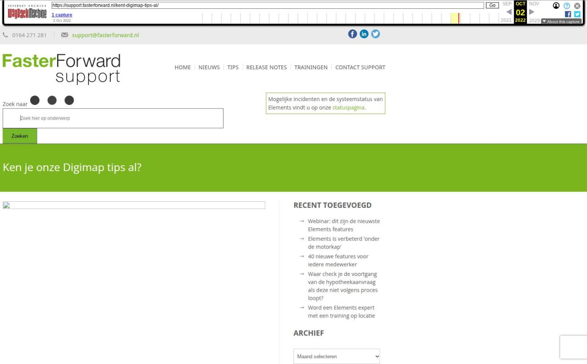

Verbeteringen Uwkluis, uitbreiding Ockto en meer

Tekstinhoud
Op dinsdag 2 juli zijn Elements en eBlinqx weer verbeterd en uitgebreid met nieuwe features. Deze release bevat onder andere herkomst dossier en voorkeurstaal gemakkelijk instellen, verbeteringen in automatisch factureren en module kalenderrechten en uitbreidingen Ockto en telefoniekoppeling.
Herkomst dossier en voorkeurstaal gemakkelijk instellen in dossier
Verbeteringen Uwkluis
Verificatiecode voor buitenlandse nummers
Bericht naar behandelaar
Selecte gegevens ophalen bij Ockto via Uwkluis
OcktoID en selecte gegevens ophalen bij Ockto
Check IBAN en mandaat
Vervallen dienst- en contractdelen niet meegenomen in facturatie
Module kalenderrechten verbeterd
Telefoniekoppeling uitgebreid
Synchronisatiedatum e-mail instellen
Taak mutatievoorstellen
Meer gegevens opvoeren onder de auto
Nieuwe dekkingen volgens SIVI update
Overige verbeterpunten
Herkomst dossier en voorkeurstaal gemakkelijk instellen in dossier
Het is nu mogelijk om onder het tabblad CRM gemakkelijk de herkomst van het dossier en de voorkeurstaal per persoon in te stellen. Hiervoor zijn aparte velden gemaakt. Op deze manier hoef je hiervoor geen CRM acties aan te maken en toe te voegen. De herkomst en voorkeurstaal is op te halen door middel van tags. Het is mogelijk om de workflows op deze velden te laten reageren, zodat bijvoorbeeld (concept) e-mails direct in de juiste voorkeurstaal komen te staan. Ook reageert Uwkluis op de ingestelde voorkeurstaal. Uwkluis zal dan automatisch in de juiste taal komen te staan. De voorkeurstaal kan Nederlands of Engels zijn.
Met de release komt onder de personen standaard de voorkeurstaal op Nederlands te staan. In de dossiers waar een CRM actie voorkeurstaal Engels staat opgevoerd wordt de voorkeurstaal Engels ingesteld onder de personen.
Wil je de voorkeurstaal verwerkt hebben in jouw workflow? Stuur dan een e-mail naar support@fasterforward.nl. Een consultant zal de mogelijkheden met je bespreken.
Let op: maak je al gebruik van de CRM actie voorkeurstaal in combinatie met de workflow? Deze manier blijft gewoon werken. Wil je gebruik maken van het nieuwe veld voorkeurstaal en dat de workflows hierop reageren? Stuur dan een e-mail naar support@fasterforward.nl, zodat een consultant met jou de mogelijkheden kan bekijken.
Verbeteringen Uwkluis
Verificatiecode voor buitenlandse nummers
Vanaf nu is het mogelijk om alle buitenlandse nummers te gebruiken voor het activeren Uwkluis. Voorheen was het alleen mogelijk om hiervoor een Nederlands, Duits, Belgisch of Engels mobiel nummer te gebruiken. Enkel naar deze type mobiele nummers kan de verificatiecode vanuit Uwkluis per sms verzonden worden. Is het een ander buitenlands nummer dan herkent Elements en Eblinqx dit bij het versturen van de uitnodiging, waarop er een verificatiecode terugkomt in Elements en eBlinqx. De adviseur kan vervolgens deze verificatiecode aanleveren bij de klant.
Bericht naar behandelaar
Vanaf nu wordt er een taak aangemaakt op de behandelaar als de klant vanuit Uwkluis een bericht verstuurd. De behandelaar wordt bepaald aan de hand van datgene wat staat ingesteld in Advisor support relatie. Staat hier een workflowgroep als behandelaar dan wordt de taak alsnog voor de adviseur aangemaakt.
Selecte gegevens ophalen bij Ockto via Uwkluis
Via Uwkluis kan je brondata ophalen bij Ockto. Het is nu mogelijk om hierop een filter te zetten, zodat je alleen de data bij de klant opvraagt die benodigd is voor jouw werkzaamheden. Hieronder lees je er meer over.
OcktoID en selecte gegevens ophalen bij Ockto
Vanaf nu kan je een filter instellen op de brondata die je ophaalt met Ockto. Vanuit de AVG wetgeving wordt verwacht dat je alleen de data bij de klant opvraagt die benodigd is voor jouw werkzaamheden. Met dit filter speel je daar op in. De beschikbare filters zijn Hypotheekadvies (beperkte data) en Advies (volledige data). Deze filters zijn bepaald door Ockto. Voor verdere details over deze filters kan je met hen contact opnemen.
Het filter stel je in onder het kantoor via Beheer – Organisatie & Personen – betreffende kantoor – tabblad Instellingen – Ockto. Dit filter geldt voor alle dossiers van dit kantoor. Staat hier geen filter ingesteld dan wordt automatisch het filter Hypotheekadvies aangehouden. Het is mogelijk om vanuit het dossier het ingestelde filter onder het kantoor te overrulen. Dit doe je onder het tabblad Brondata. Op deze manier kan je een standaard werkwijze inrichten en deze aanpassen bij afwijkende dossiers.
Daarnaast wordt bij binnenkomst van het ODM bericht automatisch het klantonderzoek bijgewerkt. Hierin komt het soort 'Indentificatie/verificatie' te staan met daarbij het resultaat 'Goed' en bron 'Ockto'.
Check IBAN en mandaat
De check voor het IBAN en mandaat wordt nu alleen getoond als automatisch factureren bij de klant van toepassing is. Vooral voor de automatische verwerking is het belangrijk dat de IBAN en mandaat correct staan ingesteld. Incasseer je niet bij de klant dan hoef je deze gegevens niet in te vullen en is het onnodig dat de check wordt getoond.
Vervallen dienst- en contractdelen niet meegenomen in facturatie
Dienst- en contractdelen met automatisch factureren op 'Ja' en een hoofdvervaldatum in het verleden worden niet meer meegenomen in de facturatie. Op deze manier worden vervallen delen niet meer in rekening gebracht. Contractdelen worden automatisch verlengd indien deze op 'Verlengen' staan. Bij diensten dien je de hoofdvervaldatum handmatig aan te passen als het dienstdeel nog lopend is en gefactureerd dient te worden. Je kunt voor het controleren van de contracten de rapportage CRM – Overzicht contracten gebruiken.
Module kalenderrechten verbeterd
De module kalenderrechten is uitgebreid en verduidelijkt. Vanaf nu kan je als beheerder zowel aangeven welke personen toegang mogen hebben tot de agenda van Persoon A en tot welke agenda's Persoon A toegang krijgt. Ook wordt duidelijker weergeven welke acties je gaat uitvoeren en voor wie. Zo kan je als beheerder gemakkelijk de kalenderrechten beheren.
Telefoniekoppeling uitgebreid
Vanaf nu wordt er in de telefoniekoppeling ook gekeken naar de nummers van contactpersonen die staan onder een organisatie. Zo wordt het dossier opgehaald als de contactpersoon bijvoorbeeld met zijn mobiele nummer belt. Voorheen werd er alleen gekeken naar de nummers die staan onder de organisatie.
Synchronisatiedatum e-mail instellen
Vanaf nu stel je gemakkelijk een nieuwe synchronisatiedatum voor de e-mail Office 365 in. Het kan voorkomen dat niet alle e-mails vanaf de server zijn opgehaald. Door de synchronisatiedatum in het verleden in te stellen kan je alsnog deze e-mails ophalen. De e-mails die niet (meer) aanwezig zijn in de e-mailbox worden binnengehaald.
Deze functionaliteit is alleen beschikbaar voor beheerders. Wil je hier als beheerder gebruik van maken stuur dan een e-mail naar support@fasterforward.nl.
Taak mutatievoorstellen
Je kunt nu zelf bepalen of het vinkje voor het aanmaken van een rappeltaak bij een mutatievoorstel standaard aan of uit staat. Het staat nu zo ingesteld dat het vinkje standaard aan staat. Wil je dit niet, stuur dan een e-mail naar support@fasterforward.nl
Meer gegevens opvoeren onder de auto
Je kan nu veel meer gegevens opvoeren onder de auto. Onder het object zijn een heel aantal nieuwe velden toegevoegd die zijn op te halen door middel van tags. Deze velden worden ook getoond onder het object in het product consumptief krediet en schadeverzekering.
Nieuwe dekkingen volgens SIVI update
Als via ADN en Aplaza berichten binnenkomen, worden de nieuwste, bijbehorende dekkingen en/of soorten documenten aangemaakt. Deze zijn namelijk uitgebreid volgens de SIVI richtlijnen. Hiermee zijn alle te selecteren verzekeringen up-to-date om correct te verwerken in een klantdossier.
Overige verbeterpunten
In zowel Elements als eBlinqx en Outlook kan je privé-afspraken aanmaken. Deze worden nu ook als zodanig gesynchroniseerd en overgenomen in de kalender. Dit geldt voor zowel privé-afspraken die in Outlook als in Elements of eBlinqx worden aangemaakt
Aan de rapportage CRM – Verzekeringsportefeuille zijn de kolommen 'Dossierstatus' en 'Standaard dossierverantwoordelijke' en 'Onderdeel RC regeling' toegevoegd. Wil je deze kolommen zien, zet ze dan aan in Rapportagebeheer
Onder een debiteur is het niet meer mogelijk om een grootboekrekening met subadministratie Rekening-courant deelnemer te selecteren
In de schadeverzekering kun je nu ook de maatschappij wijzigen als er schademeldingen aan gekoppeld zijn, behalve als er onder deze schademelding een TP incassoboeking is aangemaakt
Geplaatst op 28 juni 2024 (Laatste update: 29 juli 2024)
Laatste 5 releasenotes
Nog meer data en documenten vergelijken »
Gemakkelijk data en documenten vergelijken »
Verbeteringen boekhouding en facturatie »
Verbeteringen gespreksopname en onder de motorkap »
Verbeteringen onder de motorkap en gespreksopnames »